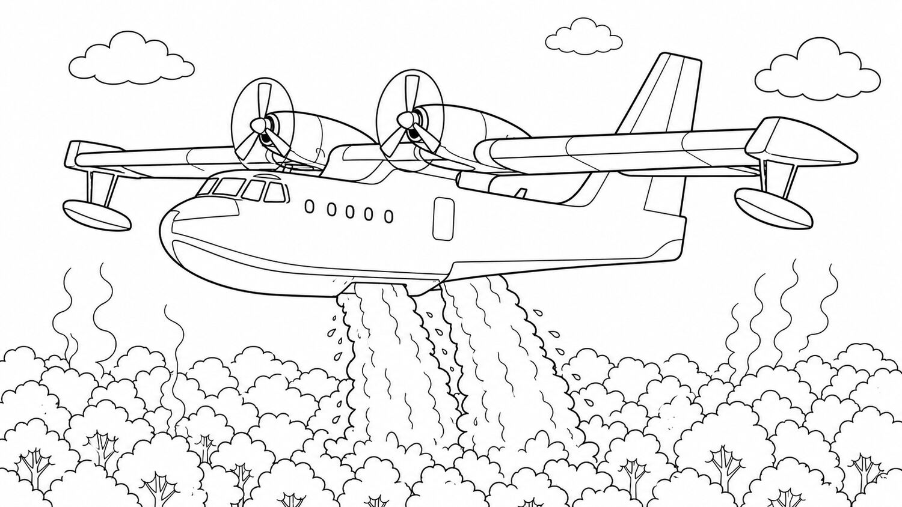

Misericordia di AricciaConfraternita di Misericordia di Ariccia ODV
Bambini · 6-8 anni
Colora il Canadair antincendio
6-8 anni🛩️ Colora il Canadair CL-415: l'aereo antincendio guidato dai piloti dei Vigili del Fuoco, che spegne gli incendi boschivi sganciando l'acqua direttamente sulle fiamme.

🛩️ Il Canadair raccoglie l'acqua nei laghi e la sgancia sugli incendi boschivi.